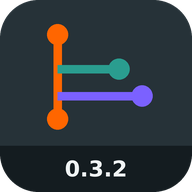
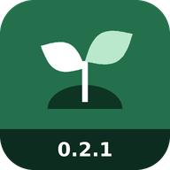

kaji apps
Current Android APKs, with versioned downloads and status. Check the SHA-256 after downloading. Status as of 2026-11-18 23:57 WIB. Previous builds are listed separately below.
Available now
unggun 0.1.2
Obtainium fork with separate com.vanipy.unggun identity. Cleanup-only0.1.2: signer, version, checksum and icon checked; device install/upgrade unverified. GitHub rate-limit fix not included. Setup guide delivered. Do not uninstall an existing app to update.
SHA-256 53ac439e26b551a0d1acb5bddd1fa1d6c066db17640cdea6d90a8d65865448c4tuju 0.1.9
Shared10/7F station areas drawn once with opposite arrows and branches for distinct stops. Shared4/6 spine and7E direction-specific stops retained. Actual APK icon badges corrected to0.1.9. Emulator checked, not physical Samsung-tested. Existing fare/access,7F hours and Gojek uncertainties retained.
SHA-256 0e02a180fb6c5d6fd4515028046de073b421618b799ecf15591e3f71a2f2e5cdirvan 0.1.0
Interactive introduction and project map with reviewed content, paper credits and source links. Website and Android build available; not verified on a physical phone.
SHA-256 fd2d07903dee74e4ff976f1bf34918df9190429a2879cb3d3d71d2a161b3b093kemas 0.3.2
Readable zone/progress at2-3columns; before/after photos remain in wider/taller layouts. Responsive bitmap budget fixed to avoid receiver crash. Emulator-qualified, not Samsung-tested; package, signer and data preserved.
SHA-256 a3d8dcfb94eb2002149ffb20188f4463bf54218e2295c286cdd6601759d5c987
cabang 0.3.2
Threaded, collapsible view for Delta Chat conversations.
SHA-256 a9e20a98448c82d8db87299c7cee791a191de037426d452e9627f7d25aaa254amenit 0.2.2
Phone-usage totals with readable stacked compact time and percentage. Useful 2-3-column content and tap-open checked in emulator, not physical Samsung. Same package, signer and permissions.
SHA-256 b78d11a8b130487fd7c50fc7ab7711e8b8ec280ec0d49538c31049a005451c52jin 0.4.16
Phone-side Delta Chat bot runtime, built as a standalone validation app. The runtime now ships inside intodo.
SHA-256 5ec6d27e303d420e424a08252eaae23963162435ab104700903a926b54d0c713unggah 1.1.2
Pushes a ZIP to a chosen GitHub repository over SSH. New com.vanipy.unggah identity installs separately from the previous app. Existing settings are untouched; backup/import settings and set up a new SSH key as needed.
SHA-256 3b6a25c03e4423c52a52da5500645b6402efc80a5d6c56c1e0fd5616ff23132dsapa 0.5.8
Helper for event moderators: counts people on camera, counts raised hands per question round and picks a random person.
SHA-256 e956f3c5b6c7b85597c2fc6832c448d792d1ba8f0f9ac5f89b9c5dc516fc04a7onda 0.2.2
On-device sensors and small-model demos for Android, built for an Edge AI talk.
SHA-256 b3e6465a55c50ae9cfcc5191ba8613908c9b029e9f654d5e3202f1759caf3276bidik 0.1.1
Prototype; account creation is optional and user-triggered. Live account creation, pairing and send-back are not verified on a real phone. After pairing, launches may attempt sync and send without a per-run prompt.
SHA-256 7cdc6e208567690e99cec0502854d1801e16efd4593aadc719cbbca6271f58e6denyut 0.7.3
Offline notes and reminders. Narrow widgets show a complete countdown and clock on separate lines, retaining notes count. Font-aware compact fallback preserves time and notes; long one-row titles may shorten. Emulator host, render and tap-open checks passed. Shown narrow layout accepted on Samsung at 17:06 with full countdown, clock and notes visible. Other spans and tap behavior are not universally phone-proven. Same package, signer, permissions and data. Local-model loading remains disabled. Source: fcd23d1.
SHA-256 bfbc3754be450340077380c6a0fcc50a93f749abafc535f8941be78fc3362b73saku 0.1.3
Experimental local vault for dummy data only, not real passwords. Useful static locked-status strip and quick-open at 2-3 columns, qualified in an emulator. No real vault-state proof. DeltaChat sync is unfinished and excluded from this release. Not tested on Samsung.
SHA-256 911838f37da487df056abbee06591775759cbfcaea16730cbba3189c87e0ecf7tumbuh 0.2.2
Offline manual commitments, inbox, space and people. Useful title and first step at2-3columns, full details larger. Emulator-qualified, not Samsung-tested. No inbox/contact access or automated sending.
SHA-256 41a33407189ef2a7a81acd79373939f3a6cf07a91930dc299871b55831df6bcdintodo 0.5.18
Separate real and synthetic Demo feeds with independent saved items and freshness. One-time setup keeps the existing key. Samsung setup confirmed18Nov: real app list, Demo banner/list and six DEMO-prefixed widget items. Automated tests passed; this does not prove every race/cache edge.
SHA-256 796da494130d2fe4769674f339068276cd070650762da05d05fb2bbf372a61e7Previous builds
intodo 0.5.13
Home-screen widget and app for reminders and todo lists, with shared lists over Delta Chat. Experimental build.
SHA-256 f01e87543ff14c4ac403334467f7e03d86d5e09b400fcb2bbdee39d099911ff1fae 1.1.2
Previous app identity and icon. This existing APK remains downloadable; it is not the new unggah candidate and does not include the new package identity.
SHA-256 53e516a60c282acbcfea95a371c625383b21fef9883c218170dade3405e1bc2dmenit 0.1.2
Estimates how much phone time goes to AI apps.
SHA-256 cad39add8845556af277845453e1eaafb8b787e17d51162d1900bcf2cff07f6ftumbuh 0.1.1
Sorts commitments, inbox, space and people you lost touch with. Entries are added by hand. Offline, no permissions, no reminders, no inbox or contact access, nothing is sent. Drafts are text you send yourself. Tested on an Android emulator with synthetic data, not on a real phone. AGPL-3.0.
SHA-256 8f733d2ca26e3511e70debbfa0ca11387b9fc793d9bf0d94223c294cfc77559adenyut 0.6.5
Notes and reminders can work offline without a model. Local-model loading is disabled in this build; no model was loaded and no chat account was provisioned for qualification.
SHA-256 334430b0146e9dc79a46c3ed416c5f9978ebf6a79cd6ee0a4465ad0f9c29190fkemas 0.2.3
Cleaning accountability app. Experimental test build.
SHA-256 971f941af9bd818aa86a17a25df025ea2faba68baa17aa9301785859f23de575menit 0.2.0
Phone-usage totals and a resizable home-screen widget. This delivered build predates the pending all-sizes compact revision. Emulator checks are not proof on your Samsung.
SHA-256 4272e681d30199936640c9c371cd08be7de1c868bd9eaa5f920995707a1066c0tumbuh 0.2.0
Offline manual commitments, inbox, space and people, with a home-screen widget. No inbox/contact access or automated sending. This delivered build predates the pending compact revision; not phone-tested.
SHA-256 169abc095777deb8240087f97c8d84312016e72473125debe610e259b8d1ed5adenyut 0.7.0
Offline notes and reminders with a home-screen widget. Local-model loading remains disabled. This delivered build predates the pending compact revision; no model/chat account provisioned or phone proof.
SHA-256 07d2c5bf351035593880198ad2121b8a0159ae3bb47b268d767306ddedd2e0aakemas 0.3.0
Cleaning accountability with a home-screen widget. This delivered build predates the pending compact and expanded-mode correction. Not phone-tested.
SHA-256 482a4f8c46161f038db9b521aa51acc8d562492640afb6729b08d1526e450616saku 0.1.1
Synthetic entries only. Not for real passwords, accounts or keys; no real vault, network, sync or Autofill. Development checkpoint; license selection is pending. Full suite: 13 tests, one known failure, KdbxSpikeTest.readsPykeepassRoundtrip.
SHA-256 cad32905084c22ad7f87beca20aaf1012085dcf6eeb08253eaba437380c4918dintodo 0.5.14
App and widget for reminders and todo lists. Same com.vanipy.intodo package, signer, data and paired feed. Widget tap routing checked on an emulator; post-tap content rendering remains unverified and was explicitly bypassed. Not Samsung-tested.
SHA-256 392c257e7e862038863d5f90076269d2d480a11993772dd7f1f809ea8bdd7c1dtuju 0.1.0
Bundled busway overview map with pinch-to-zoom and drag-to-pan. Offline map only: no live directions, journey planning, fare calculation or service updates. Direction qualifiers and fare uncertainties stay visible. No permissions. Released APK not installed on a physical phone.
SHA-256 3e466703b4ab3ff7aeb9579025a5a55bde21795e987743da86294ca5d76c8cc3intodo 0.5.16
Current names and update outputs use intodo only. Same package, signer, feed and list data. Old download compatibility dropped. Rename-only: useful 2-3-column widget content correction is in progress. Post-tap content rendering and physical Samsung behavior remain unverified.
SHA-256 687908c23385118c762ee684bb4c9b9c93cededc11d3f1f7ce89afa6cd837c4amenit 0.2.1
Phone-usage totals and responsive compact widgets. Existing package, signer and permissions retained; emulator qualification is not Samsung install proof. Useful 2-3-column widget content correction is in progress.
SHA-256 b5576b2cc24f3cbe387a9a2e57f03f9fa0acd5c2a6df3fc330276a7a9282931c
tumbuh 0.2.1
Offline manual commitments, inbox, space and people, with responsive compact widgets. No inbox/contact access or automated sending. Not verified on a physical Samsung. Useful 2-3-column widget content correction is in progress.
SHA-256 461f7d2d168eb906e3fd3a5df6d6e15e5d9a91d8b84314da05eef7693e82af1ddenyut 0.7.1
Offline notes and reminders with responsive compact widgets. Local-model loading remains disabled; no model/chat account provisioned or Samsung install proof. Useful 2-3-column widget content correction is in progress.
SHA-256 8ffada80af5e09d750f54e9223275f0970cd1d0e21c1a7bbdc81143644f39f4bkemas 0.3.1
Cleaning accountability with responsive compact and expanded widget modes. Existing package and signer retained; not verified on a physical Samsung. Useful 2-3-column widget content correction is in progress.
SHA-256 1b078b263a31313458211d9b52f6660448c869bf5d8e48de1dd79b2a3dd6dcfdsaku 0.1.2
Not for real passwords, accounts or keys. Static locked-status widget and quick-open only. Experimental local vault with a known KdbxSpikeTest.readsPykeepassRoundtrip interop failure; not all tests pass. DeltaChat sync is unfinished. No production-safety or physical-phone claim. Useful 2-3-column widget content correction is in progress.
SHA-256 32ded85de300b2f567f06f5deb13eeef769c4d479d651c8adb7a3152b16420dfdenyut 0.7.2
Offline notes and reminders. Useful next reminder and note count at2-3columns. Emulator-qualified, not Samsung-tested. Local-model loading remains disabled; no chat account provisioned by this update.
SHA-256 e2116950649596b21ea4f67b7882de661067ceaaad3bbd7d0d7f689431aaa577tuju 0.1.1
Offline busway map with all selected outbound intermediate stations from an operator GTFS snapshot, pinch-to-zoom and drag-to-pan. Existing direction, transfer and fare caveats remain. No live bus guarantee or physical Samsung proof. Same package/signer, no permissions.
SHA-256 d422952ef3ad3fdbdbcd23be8df81c69c644c3853bea8342d92e57871e6df6b9tuju 0.1.2
Offline corrected overview and closeup. Gabus stays far-side beyond bridge and venue; Phe is beside the venue. APK map matches source 311cd12. Same package/signer, no permissions; not physically phone-proven. Website fare notes are newer: this 0.1.2 APK still contains the earlier uncertainty wording.
SHA-256 144ae3a119a05887f049e9a633ac2624bd8fc03fd00ece1740f5a6988f741bdbintodo 0.5.17
Useful list rows at 2-3columns; repeated same-widget resizing preserves all six synthetic items without Loading rows in Android15 emulator. Same package, signer, feed and list data. Samsung behavior unverified; no reset or feed switch.
SHA-256 e17971ebca35e8dfb12499d3911a23e8000ab627626bc3c84a0cf2a006bc6f99tuju 0.1.3
Offline corrected maps with fare notes based on firsthand clarification: 4 to 6 has no extra fare; the Flyover link stays inside the paid area with no exit or extra fare; 6 to 7E requires an exit, very short walk and payment again. Not independent operator-policy verification. Geometry unchanged. Same package/signer, no permissions. Emulator-tested, not Samsung-proven.
SHA-256 7e5eab7a23f3865e1d858ed346cd3f94816385efbe5969ce967e25b560217bdftuju 0.1.4
Plaza Festival added to the offline map. Routes 4 and 4D share one first-ten-stop trunk through Halimun, then 4D branches to Rasuna Said. Prior firsthand fare notes preserved. Same-source debug Android WebView checked on an emulator; signed APK not phone-tested. Same package/signer, no permissions.
SHA-256 80cb319a1ab9744e65c1de7bb096eab35585e2b8deeef2195f11e1c484e12182tuju 0.1.5
Both Arkadia return options are now drawn in the offline map: Arkadia-side 7E to Ragunan, 6 to Galunggung, 4 to Simpang Pramuka 1; or far-side Gojek to Flyover Raya Bogor, 7F to Kayu Putih Rawasari. Outbound routes, shared4/4D trunk, destinations and fares retained. Same-source debug Android emulator passed; not Samsung-tested. Ragunan access/fare continuity, differing7F hours and Gojek fare/time remain unverified.
SHA-256 5c08de849e0a72fe13fcd4fbb8869e0a60ebc274bf9dea7a1cbadbfb24e6cf53tuju 0.1.6
Current0.1.6 release puts outbound and returns on one canvas, but shared4/6/7E sections are still separate verticals. A single shared-spine correction is in progress. Emulator pinch/drag passed; not physical Samsung-tested. Ragunan access/fare continuity, conflicting7F hours and Gojek fare/time remain unverified.
SHA-256 a79fede35f44953af1b8349a5abdabdb9abc20aaef90dd074303eb4a24dfd0cd